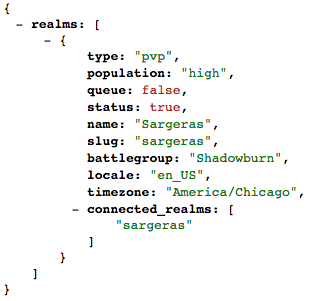

In this section we will over our first API call and go into detail about the specifics for using the blizzard API. For our first API call we will look for the Realm Status of a specific server. This is important information for anyone who plays an Online game. It can be good to know before you decide to try and log on.
The first thing that I want to show is a working version of a Realm Status call. In this call we will be passing the name of the server and we will return the Type, Status, and Population. The Type referes to if the server is Player vs Player, Player vs Environment, or Role Playing. The status will tell us if the server is live or not and the population will give us a rough guess as to how many people are currently playing.(Full, High, Medium, or Low)
I have defaulted the realm Sargeras, but if you would like you can also try another realm. Here is a list of some other Realms:
Now that you have seen this in action, it is time to go over how to it works.
Create a Form in HTML
The very first thing that you will want to do is create the Form. Below is the example from above.
As you can see there is nothing special about this form. It have a single label and a submit button.
Submit Button Action Listener
We need to create a way for the site to do something when we click the submit button. To do this we will create an action listener in Javascript.
This sets up an event lisener and when the button is pressed it will call the function. This is important so that we can load the contents of the form without having to reload the page like if we did a get directly imbedded in the submit button like we did in one of the first Assignments of the term.
Javascript Function
In order to do an API call we need to use a Javascript function to dynamially create our API Call URL. Below you will see the entire function that is used for this, but in the subsequent section we will discuss in more detail the special parts for the Blizzard API.
The Payload
Setting up the payload correctly as something that can take a little bit of time to understand. For this part, we need to setup the parameter from the form and use it to determine the other information that we want returned.
We are taking the realm value from the form and placing it into the payload, which will be used later before we make the actual call.
The next thing that we do is build the actual API Call URL. Here is an example of an API URL that was taken from the API documentation.
https://us.api.battle.net/wow/realm/status?locale=en_US&apikey=a4mtwrongkeyj8ynjw6bzd3hab7sk46s&realm=Sargeras
We need to take the above static API URL and use Javascript to break it down and make it a dynamic process.
In the code above we have broken down the URL into many different parts. First off, this will only work for US servers, if you would like to open your search to the other regions, then you would need to add another section to the form as well as another variable to your URL creation. We are taking the static parts of the URL and hardcoding them, and then taking the dynamic parts and grabbing them from the document.
I have decided to put my API Key into its own variable so that I don't have to copy and paste it every time I want to use it. Instead I can just use the variables name.
Returned JSON Object
Once we have a returned JSON Object it's time to look at this object with JSONView to determine the names of the variables we want to use. This is where our JSON Object from ealier comes into play.
A wonderful thing about JSON Objects is that they are treated like arrays. For example, if we had multiple realms returned and we wanted to get the information from the 3rd one we would simply call it like realms[2].name. However, since we will only be returning a single realm with our Object, it is safe to assume that we will always use realms[0]. Also, JSON Object are exactly like objects from every other language and you access the members of object with the dot notation. ex - realms[0].name will return the Realm Name.
In the above picture we show how we fill in each of the parts to our completed list. This will then find each elementID and change it to the response from the JSON Object.
This should help you to get a better understanding of how to use this specific API for an easy call. In the next section we will learn how to use the API Call to find the portrait of a specific character. Click the Next arrow when you're ready and let's dive into some more code.